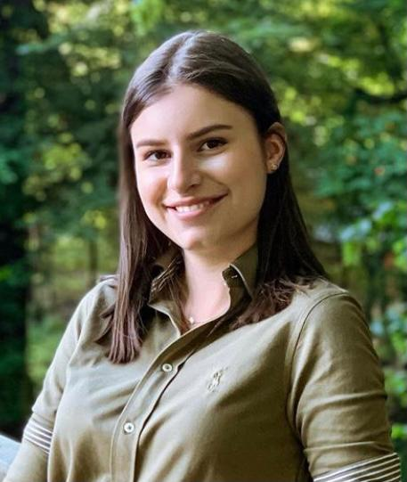

| INFORMAȚII PERSONALE | Frunză Andra-Maria |
|---|---|
|  |
Strada Oncești, bloc 21, ap. 21, județ Sibiu, localitate Sibiu, Cod poștal: 550305 (+40) 0746926618 andra.frunza@ulbsibiu.com Sex: Feminin Naționalitate: Română Data nașterii: 12 August 2000 |
| EDUCAȚIE ȘI FORMARE | ||||||||||||||||||||||||
|---|---|---|---|---|---|---|---|---|---|---|---|---|---|---|---|---|---|---|---|---|---|---|---|---|
| sept. 2007 - iunie 2015 | Școala Gimnazială "Radu Selejan" Sibiu | |||||||||||||||||||||||
| sept. 2015 - iunie 2019 |
Bacalaureat Colegiul Național "Gheorghe Lazăr" Sibiu Profilul: Științe ale naturii |
|||||||||||||||||||||||
| oct. 2019 - prezent |
Student Facultatea de inginerie "Hermann Oberth" din cadrul Universității "Lucian Blaga" Sibiu Domeniul Calculatoare și Tehnologia Informației Specializarea: Calculatoare |
|||||||||||||||||||||||
| COMPETENȚE LINGVISTICE | ||||||||||||||||||||||||
| Limbă(i) maternă(e): | Română | |||||||||||||||||||||||
Altă(e) limbă(i): |
|
|||||||||||||||||||||||
| COMPETENȚE DIGITALE | ||||||||||||||||||||||||
| 12 feb. 2019 |
ECDL Profile Certificate Microsoft Office: Word, Excel, Access, Power Point, Outlook |
|||||||||||||||||||||||
| ABILITĂȚI SOCIALE | ||||||||||||||||||||||||
| Spirit de echipă Persoană sociabilă și dornică să ofere ajutor Adaptare rapidă condițiilor de mediu Dorință arzătoare de a învăța lucruri noi |
||||||||||||||||||||||||
| HOBBY-URI | ||||||||||||||||||||||||
| Ador să călătoresc și să imortalizez fiecare moment prin arta fotografiei. Printre pasiunile mele se numără și editatul sau crearea diverselor imagini într-unul din programele Lightroom, Photoshop sau Ilustrator. Îmi doresc să descopăr secretele HTML-ului, CSS-ului la un nivel mai avansat. |
||||||||||||||||||||||||
| Permis de conducere | B B1 AM | |||||||||||||||||||||||